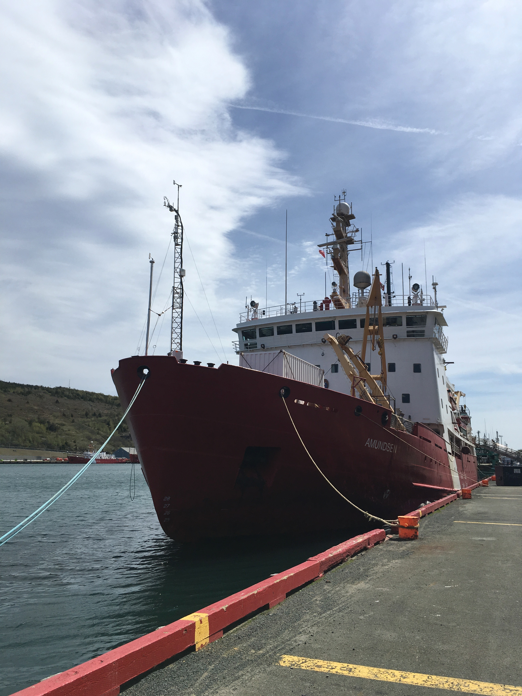
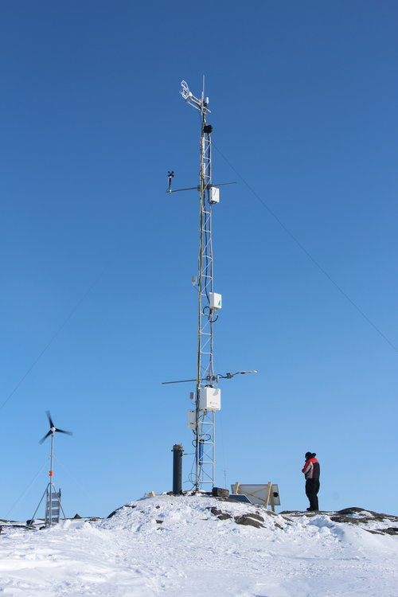

CCGS Amundsen
Flux tower on the research vessel / ice breaker CCGS Amundsen. System ran throughout the 2017 and 2018 Amundsen Expeditions.

Cambridge Bay
A tower installation to measure fluxes of carbon dioxide from an island in the Dease Strait. Tower in operating continuously since April 2017.

Nathaniel B. Palmer
Icebreaker that I worked on for my graduate research measuring fluxes of carbon dioxide over the ocean and marginal ice zone.